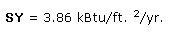

Economic Outlook
"To put it another way, each of us has a small oil, gas, or electric 'well' right in our house, one that can be tapped fairly cheaply. In fact, such investments offer some of the highest rates of return available in the entire economy. "
These two sentences-from this issue's Plowboy Interview with Amory and Hunter Lovins-make a whole lot of financial sense. No standard investment, whether it be money market certificate, bond, stock, or collectible, is likely to pay you as much for a small outlay as a good home energy improvement. The money you save this way is also the equivalent of tax-free income. Why, it's often even better than that: In many cases, you can claim federal-and possibly state-tax credits for the work. The Internal Revenue Service currently allows you to deduct 15% of the cost of conservation measures (and 40% of active solar systems) straight from the bill you pay Uncle Sam.
In other words, can you afford not to save energy?
In order to put some meat on these fine sounding statements, we offer you a simple formula for calculating the payback of an energy conservation investment. There are, of course, more sophisticated-and meaningful-ways to make financial judgments, but the following approach will give you a general idea of whether a particular conservation step is economical.
In the following savings and payback formula, we've used some symbols to keep the equations from appearing too cluttered. Here's what they mean:
RO: Old R-value, the existing R-value of the area to be improved
RN: New R-value, the new R-value of the area after it's improved
DD: Degree-Days, the heating degree-days at your location (check a solar energy book or call your local weather service to find this out)
SE: Saved Energy, in units of 1,000 Btu per square foot per year (kBtu/ft. 2 /yr.)
A: Area, total area of the retrofit in square feet
CE: Cost of Energy, your energy cost per 1,000 Btu in dollars (see the energy cost chart below)
SY: Savings per Year, the amount of money the improvement will save you each year in energy costs
CI: Cost of Improvement, total amount spent on the improvement
P: Payback, the payback period in years
Ready? First you calculate SE, the annual energy savings per square foot of the retrofit improvement:
SE = (1/RO-1/RN) X DD X 24/1,000
Multiply that product by the area of the improvement and by the cost of energy to get the total annual savings, like this:
SY = SE X A X CE
Now, it's a cinch to work out the payback:
P = CI/SY
Let's look at a few examples. For starters, let's determine the payback for upgrading 1,000 square feet of wall from no insulation (R-3) to R-11. Our sample house is located in Asheville, North Carolina-which has 4,200 heating degree-days-and at present the owner pays $1.25 per gallon for fuel oil to heat the building. The per-square-foot cost of the blow-in insulation is about 20 cents, including the fee for renting the blower, and the owner supplies the labor. (This job might sound intimidating, but it's really not difficult.)
Annual Energy Savings
SE =(1/3-1/11) X 4,200 X 24/1,000
=24.44 kBtu/ft. 2 /yr.
Annual Money Savings
SY = 24.44 X 1,000 X .015 = $366.60
Payback
P = $200/$366.60 = 0.55 yr.
In other words, that $200 investment will pay for itself in just over half a year. From then on, it will earn you $366.60 extra income annually! Beat that, stock market!
Now, let's see what would happen if that Asheville house already had blown-in insulation and you were thinking about upgrading that R-11 to R-19 by removing the siding, adding rigid board insulation, and replacing the siding. The cost of this owner-installed retrofit would be about 35 cents per square foot or materials.
Annual Energy Savings
SE = (1/11-1/19) X 4,200 X 24/1,000
Annual Money Savings
SY = 3.86 X 1,000 X .015. = $57.90
Payback
P = $350/$57.90 = 6.0 yr.
This time it's going to take six years to earn that $350 back. From then on, you'll be saving an extra $57.90 per year. While not as all-out glorious as the first investment, that's still nothing to sneeze at. (What else pays 16.5% interest in the first year?)
Lest you assume that every investment in energy efficiency is a great one, let's look at one more possibility. Using the last example as a basis, let's calculate the payback if the owner decides to pay someone else to install that rigid board insulation. Removing siding and then furring out the walls is fairly laborious. It might add another 55 cents per square foot to the price of the job, bringing the cost up to 90 cents /ft. 2 ... or a total of $900.
Well, the annual energy and money savings will be the same as they were above, but look what that total cost of the improvement does to the payback:
P = $900/$57.90 = 15.5 yr.
Whoops! Now, it's going to be 15-1/2years before you earn your money back. Not so good, eh? (Well, it could be worse. Your investment will be earning interest at a 5.7% rate that first year ... and increasing the resale value of your house.)
The difference, of course, between the first two shining examples and the last, more mundane one is labor. To make the typical energy-efficiency improvement really pay off, you have to do it yourself.
But that's what this magazine's all about, isn't it?
|
 |
|
|